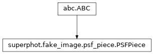

superphot.fake_image.psf_piece module¶
Class Inheritance Diagram¶

Define the base class for pieces of piecewise PSFs.
-
class
superphot.fake_image.psf_piece.PSFPiece[source]¶ Bases:
abc.ABC
Declare a minimum interface for pieces of PiecewisePSF.
-
integrate(left, bottom, width, height)[source]¶ Evaluate the integral of the cell function over a rectangle.
Parameters: - left – The x-coordinate of the left boundary of the rectangle to integrate over.
- bottom – The y-coordinate of the bottom boundary of the rectangle to integrate over.
- width – The x-size of the rectangle to integrate over.
- height – The y-size of the rectangle to integrate over.
Returns: The integral of the bi-cubic polynomial function defining this piece of the PSF over the specified rectangle, with no consideration of whether the rectangle fits within the piece.
Return type:
-